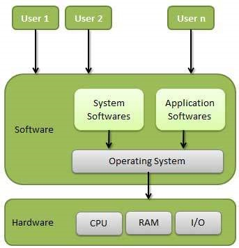

An Operating System (OS) is an interface between a computer user and computer hardware. An operating system is a software which performs all the basic tasks like file management , memory management, process management, handling input and output, and controlling peripheral devices such as disk drives and printers.
Some popular Operating Systems include Linux Operating System, Windows Operating System, VMS, OS/400, AIX, z/OS, etc.
An operating system is a program that acts as an interface between the user and the computer hardware and controls the execution of all kinds of programs.
